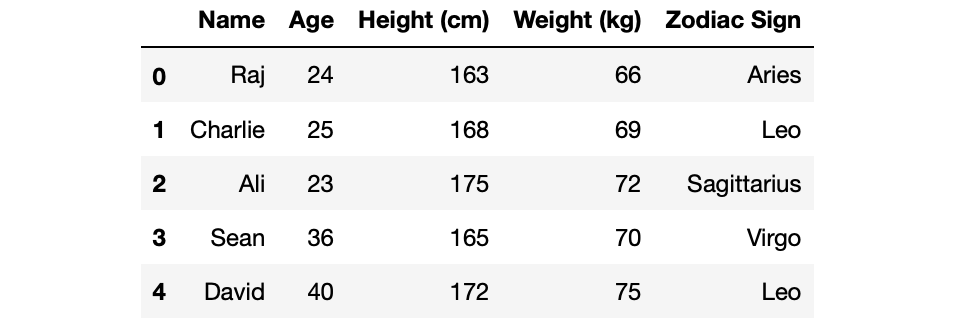

# import library
import math
# access methods from the library
math.pi3.141592653589793Week 5: Numpy and basic file management
Importing libraries and data in Python
Data as nested lists
Numpy
Activity: starting on problem set 2
Python allows you to import libraries in a few different ways:
The full library with the original name
The full library with an alias
Some functions from the library
All methods from the library as independent functions
--------------------------------------------------------------------------- NameError Traceback (most recent call last) /var/folders/mb/h311n7mj5dl4l2h43n8bnzs00000gp/T/ipykernel_77815/767399446.py in <module> 1 # this will throw you an error ----> 2 pi NameError: name 'pi' is not defined
open(): opens a connection with files on our system.
close(): closes the connection.
write(): writes files on your system. Also line by line, as in open()
with(): wrapper for open and close that allows alias.
# Libraries
import csv
import os
# Print current working directory
os.getcwd()
# List files in datasets directory
os.listdir("../datasets/")
# Load gapminder dataset
with open("../datasets/gapminder.csv",mode="rt") as file:
data = [row for row in csv.reader(file)]'/Users/rj545/Dropbox/PPOL5203_fall2026/slides'['gapminder.csv']Issue: python doesn’t recognize the first element as a header
Multi-step process
## create a mapping of column names to col positions
name_cols = data.pop(0)
name_cols
## get index of a particular column name
country_index = name_cols.index("country")
country_index
## subset to value at that index
## (note, since we used pop our positions change, another
## drawback)
data[99][country_index]['country', 'lifeExp', 'gdpPercap']0'Burundi'Complicated process in the nested list structure
# Getting all the life expectancies (column 1)
life_exp = [float(row[1]) for row in data]
print(life_exp)[39.21, 52.505, 73.103, 43.352, 72.992, 63.607, 64.28, 69.393, 52.502, 57.609, 73.444, 62.817, 68.922, 73.989, 52.302, 47.619, 42.96, 70.056, 54.336, 74.903, 52.382, 70.299, 71.601, 66.828, 70.177, 50.007, 74.014, 60.721, 52.681, 44.401, 67.708, 59.304, 73.733, 52.341, 58.859, 59.696, 66.644, 66.526, 47.903, 69.744, 65.866, 51.499, 46.78, 68.749, 49.002, 67.431, 73.646, 59.03, 71.511, 46.381, 71.22, 43.581, 49.834, 44.544, 71.045, 53.491, 48.401, 61.346, 41.482, 72.739, 68.433, 57.48, 40.38, 43.413, 58.679, 42.476, 47.771, 46.774, 51.221, 64.953, 45.996, 68.291, 61.554, 56.243, 50.626, 58.443, 52.663, 54.598, 48.436, 37.479, 65.409, 57.896, 53.322, 75.565, 73.923, 74.827, 59.633, 53.166, 62.2, 65.606, 74.663, 55.89, 48.986, 58.637, 57.921, 43.24, 66.581, 76.511, 40.989, 44.817, 67.802, 70.181, 60.967, 74.37, 48.78, 45.999, 73.642, 60.329, 65.001, 44.476, 56.729, 63.898, 48.129, 73.478, 54.882, 61.785, 36.769, 70.696, 47.912, 66.809, 69.06, 74.203, 75.648, 74.349, 44.559, 43.867, 68.551, 56.582, 70.782, 37.883, 76.177, 58.349, 53.993, 44.694, 50.165, 75.843, 70.337, 70.42, 59.786, 73.017, 62.239]
Numpy leans toward less flexibility and more efficiency.
Lists gives you more flexibility and less efficiency.
Allows for easy vectorization of functions
Broadcasting for working with arrays with different dimensions
# Import numpy library; alias as np
import numpy as np
# Convert nested list to array
data_np = np.array(data)
# Print
data_nparray([['Guinea_Bissau', '39.21', '652.157'],
['Bolivia', '52.505', '2961.229'],
['Austria', '73.103', '20411.916'],
['Malawi', '43.352', '575.447'],
['Finland', '72.992', '17473.723'],
['North_Korea', '63.607', '2591.853'],
['Malaysia', '64.28', '5406.038'],
['Hungary', '69.393', '10888.176'],
['Congo', '52.502', '3312.788'],
['Morocco', '57.609', '2447.909'],
['Germany', '73.444', '20556.684'],
['Ecuador', '62.817', '5733.625'],
['Kuwait', '68.922', '65332.91'],
['New_Zealand', '73.989', '17262.623'],
['Mauritania', '52.302', '1356.671'],
['Uganda', '47.619', '810.384'],
['Equatorial Guinea', '42.96', '2469.167'],
['Croatia', '70.056', '9331.712'],
['Indonesia', '54.336', '1741.365'],
['Canada', '74.903', '22410.746'],
['Comoros', '52.382', '1314.38'],
['Montenegro', '70.299', '7208.065'],
['Slovenia', '71.601', '14074.582'],
['Trinidad and Tobago', '66.828', '7866.872'],
['Poland', '70.177', '8416.554'],
['Lesotho', '50.007', '780.553'],
['Italy', '74.014', '16245.209'],
['Tunisia', '60.721', '3477.21'],
['Kenya', '52.681', '1200.416'],
['Gambia', '44.401', '680.133'],
['Bosnia and Herzegovina', '67.708', '3484.779'],
['Libya', '59.304', '12013.579'],
['Greece', '73.733', '13969.037'],
['Ghana', '52.341', '1044.582'],
['Peru', '58.859', '5613.844'],
['Turkey', '59.696', '4469.453'],
['Reunion', '66.644', '4898.398'],
['Sri_Lanka', '66.526', '1854.731'],
['Cambodia', '47.903', '675.368'],
['Bulgaria', '69.744', '6384.055'],
['Lebanon', '65.866', '7269.216'],
['Togo', '51.499', '1153.82'],
['Yemen', '46.78', '1569.275'],
['Jamaica', '68.749', '6197.645'],
['Swaziland', '49.002', '3163.352'],
['Chile', '67.431', '6703.289'],
['Israel', '73.646', '14160.936'],
['Algeria', '59.03', '4426.026'],
['Czech_Republic', '71.511', '13920.011'],
['Djibouti', '46.381', '2697.833'],
['Singapore', '71.22', '17425.382'],
['Nigeria', '43.581', '1488.309'],
['Bangladesh', '49.834', '817.559'],
['DRC', '44.544', '648.343'],
['Cuba', '71.045', '6283.259'],
['Namibia', '53.491', '3675.582'],
['Sudan', '48.401', '1835.01'],
['Syria', '61.346', '3009.288'],
['Rwanda', '41.482', '675.669'],
['Puerto Rico', '72.739', '10863.164'],
['Albania', '68.433', '3255.367'],
['Vietnam', '57.48', '1017.713'],
['Mozambique', '40.38', '542.278'],
['Mali', '43.413', '673.093'],
['Saudi Arabia', '58.679', '20261.744'],
['Liberia', '42.476', '604.814'],
['Madagascar', '47.771', '1335.595'],
['Chad', '46.774', '1165.454'],
['Gabon', '51.221', '11529.865'],
['Mauritius', '64.953', '4768.942'],
['Zambia', '45.996', '1358.199'],
['Romania', '68.291', '7300.17'],
['Dominican Republic', '61.554', '2844.856'],
['Egypt', '56.243', '3074.031'],
['Senegal', '50.626', '1533.122'],
['Oman', '58.443', '12138.562'],
['Zimbabwe', '52.663', '635.858'],
['Botswana', '54.598', '5031.504'],
["Cote d'Ivoire", '48.436', '1912.825'],
['Afghanistan', '37.479', '802.675'],
['Mexico', '65.409', '7724.113'],
['Sao Tome and Principe', '57.896', '1382.782'],
['Myanmar', '53.322', '439.333'],
['Switzerland', '75.565', '27074.334'],
['United Kingdom', '73.923', '19380.473'],
['Japan', '74.827', '17750.87'],
['El Salvador', '59.633', '4431.847'],
['India', '53.166', '1057.296'],
['Thailand', '62.2', '3045.966'],
['Bahrain', '65.606', '18077.664'],
['Australia', '74.663', '19980.596'],
['Mongolia', '55.89', '1692.805'],
['Nepal', '48.986', '782.729'],
['Iran', '58.637', '7376.583'],
['Honduras', '57.921', '2834.413'],
['Guinea', '43.24', '776.067'],
['Venezuela', '66.581', '10088.516'],
['Iceland', '76.511', '20531.422'],
['Somalia', '40.989', '1140.793'],
['Burundi', '44.817', '471.663'],
['Panama', '67.802', '5754.827'],
['Costa Rica', '70.181', '5448.611'],
['Philippines', '60.967', '2174.771'],
['Denmark', '74.37', '21671.825'],
['Benin', '48.78', '1155.395'],
['Eritrea', '45.999', '541.003'],
['Belgium', '73.642', '19900.758'],
['West Bank and Gaza', '60.329', '3759.997'],
['South_Korea', '65.001', '8217.318'],
['Ethiopia', '44.476', '509.115'],
['Guatemala', '56.729', '4015.403'],
['Colombia', '63.898', '4195.343'],
['Cameroon', '48.129', '1774.634'],
['United States', '73.478', '26261.151'],
['Pakistan', '54.882', '1439.271'],
['China', '61.785', '1488.308'],
['Sierra Leone', '36.769', '1072.819'],
['Slovak Republic', '70.696', '10415.531'],
['Tanzania', '47.912', '849.281'],
['Paraguay', '66.809', '3239.607'],
['Argentina', '69.06', '8955.554'],
['Spain', '74.203', '14029.826'],
['Netherlands', '75.648', '21748.852'],
['France', '74.349', '18833.57'],
['Niger', '44.559', '781.077'],
['Central African Republic', '43.867', '958.785'],
['Serbia', '68.551', '9305.049'],
['Iraq', '56.582', '7811.809'],
['Uruguay', '70.782', '7100.133'],
['Angola', '37.883', '3607.101'],
['Sweden', '76.177', '19943.126'],
['Nicaragua', '58.349', '3424.656'],
['South Africa', '53.993', '7247.431'],
['Burkina Faso', '44.694', '843.991'],
['Haiti', '50.165', '1620.739'],
['Norway', '75.843', '26747.307'],
['Taiwan', '70.337', '10224.807'],
['Portugal', '70.42', '11354.092'],
['Jordan', '59.786', '3128.121'],
['Ireland', '73.017', '15758.606'],
['Brazil', '62.239', '5829.317']], dtype='<U24')Pulling out life expectancy
array(['39.21', '52.505', '73.103', '43.352', '72.992', '63.607', '64.28',
'69.393', '52.502', '57.609', '73.444', '62.817', '68.922',
'73.989', '52.302', '47.619', '42.96', '70.056', '54.336',
'74.903', '52.382', '70.299', '71.601', '66.828', '70.177',
'50.007', '74.014', '60.721', '52.681', '44.401', '67.708',
'59.304', '73.733', '52.341', '58.859', '59.696', '66.644',
'66.526', '47.903', '69.744', '65.866', '51.499', '46.78',
'68.749', '49.002', '67.431', '73.646', '59.03', '71.511',
'46.381', '71.22', '43.581', '49.834', '44.544', '71.045',
'53.491', '48.401', '61.346', '41.482', '72.739', '68.433',
'57.48', '40.38', '43.413', '58.679', '42.476', '47.771', '46.774',
'51.221', '64.953', '45.996', '68.291', '61.554', '56.243',
'50.626', '58.443', '52.663', '54.598', '48.436', '37.479',
'65.409', '57.896', '53.322', '75.565', '73.923', '74.827',
'59.633', '53.166', '62.2', '65.606', '74.663', '55.89', '48.986',
'58.637', '57.921', '43.24', '66.581', '76.511', '40.989',
'44.817', '67.802', '70.181', '60.967', '74.37', '48.78', '45.999',
'73.642', '60.329', '65.001', '44.476', '56.729', '63.898',
'48.129', '73.478', '54.882', '61.785', '36.769', '70.696',
'47.912', '66.809', '69.06', '74.203', '75.648', '74.349',
'44.559', '43.867', '68.551', '56.582', '70.782', '37.883',
'76.177', '58.349', '53.993', '44.694', '50.165', '75.843',
'70.337', '70.42', '59.786', '73.017', '62.239'], dtype='<U24')# from a list of int elements
np.array([1, 4, 2, 5, 3])
# you can specify the type
np.array([1, 2, 3, 4], dtype='int')
# unlike lists, NumPy arrays can explicitly be multidimensional
multi_array = np.array([range(i, i+3) for i in [2, 4, 6]])
multi_arrayarray([1, 4, 2, 5, 3])array([1, 2, 3, 4])array([[2, 3, 4],
[4, 5, 6],
[6, 7, 8]])# lists support heterogenous data types. It needs to store this information somewhere for every element!
list_ = ["beep", "false", False, 1, 1.2]
list_
# numpys only support homogenous data types. Stores elements and this information in a single place!
numpy_boolean = np.array([[True, 0], [True, "TRUE"], [False, True]], dtype=bool)
numpy_boolean['beep', 'false', False, 1, 1.2]array([[ True, False],
[ True, True],
[False, True]])## creating a 3x3 array filled with 1s
np.ones((3,3))
## creating a 3x3 array filled with random numbers between 0 and 1
np.random.random((3, 3))
## creating a 3x3 array filled with random integers
## from a pre-defined interval (in this case, 1 through 10)
np.random.randint(1, 10, (3, 3))array([[1., 1., 1.],
[1., 1., 1.],
[1., 1., 1.]])array([[0.35557464, 0.54990631, 0.62684939],
[0.212665 , 0.72406384, 0.83272866],
[0.67972944, 0.35280126, 0.95155749]])array([[3, 5, 6],
[8, 8, 5],
[6, 5, 2]])numpy.dim: tells us the number of dimensionsnumpy.shape: tells us the size of each dimensionnumpy.size: tells us the full size of a arraySimilar to list indexing but more flexibility as you go above 1 dimension
In a one-dimensional array, you can access the ith value (counting from zero) by specifying the desired numerical index.
M[element_index]M[row, column]You can use the : shortcut for slicing.
X
# index first row
X[0]
# index first column
X[:,0]
# index a specific cell
X[0,0]
# slice rows and columns
X[0:3,0:3]
# last row
X[-1,:] array([[38, 23, 51, 75, 54],
[76, 58, 46, 6, 37],
[29, 43, 60, 44, 86],
[ 2, 9, 99, 87, 82],
[34, 78, 2, 44, 82]])array([38, 23, 51, 75, 54])array([38, 76, 29, 2, 34])38array([[38, 23, 51],
[76, 58, 46],
[29, 43, 60]])array([34, 78, 2, 44, 82])As we just saw, numpy makes your life easier for access elements on a rectangular type of data – when compared to nested lists.
In the same vein, numpy uses the benefits of its easy indexing scheme to facilitate reassignment of values.
# Reassign data values by referencing positions
X[0,0] = 999
X
# Reassign whole ranges of values
## entire row
X[0,:] = 999
X
## entire column
X[:,0] = 999
Xarray([[999., 0., 0., 0., 0.],
[ 0., 0., 0., 0., 0.],
[ 0., 0., 0., 0., 0.],
[ 0., 0., 0., 0., 0.],
[ 0., 0., 0., 0., 0.],
[ 0., 0., 0., 0., 0.],
[ 0., 0., 0., 0., 0.],
[ 0., 0., 0., 0., 0.],
[ 0., 0., 0., 0., 0.],
[ 0., 0., 0., 0., 0.]])array([[999., 999., 999., 999., 999.],
[ 0., 0., 0., 0., 0.],
[ 0., 0., 0., 0., 0.],
[ 0., 0., 0., 0., 0.],
[ 0., 0., 0., 0., 0.],
[ 0., 0., 0., 0., 0.],
[ 0., 0., 0., 0., 0.],
[ 0., 0., 0., 0., 0.],
[ 0., 0., 0., 0., 0.],
[ 0., 0., 0., 0., 0.]])array([[999., 999., 999., 999., 999.],
[999., 0., 0., 0., 0.],
[999., 0., 0., 0., 0.],
[999., 0., 0., 0., 0.],
[999., 0., 0., 0., 0.],
[999., 0., 0., 0., 0.],
[999., 0., 0., 0., 0.],
[999., 0., 0., 0., 0.],
[999., 0., 0., 0., 0.],
[999., 0., 0., 0., 0.]])array([[ 0. , 1.6, 0.4, -0.6, 0.8],
[ 1.5, 2.4, -0.1, -0.6, 0.2],
[-0.3, 1.1, -0.3, -0.5, -0.9],
[ 0.8, 0.2, 0.9, 0.3, 3.2],
[-1.4, -0.8, 0.3, -2.3, -1.4],
[ 0.7, -0.4, 0.4, -1.3, 1.3],
[ 0.3, 0.5, -0.9, -0.2, -0.7],
[-1.2, 0.2, 1.2, 0.6, -0.8],
[ 0.4, -0.4, -0.1, -0.4, -1.6],
[ 0.6, -0.4, -1.1, -0.3, -1. ]])[[ 0. 1. 1. -0.6 1. ]
[ 1. 1. -0.1 -0.6 1. ]
[-0.3 1. -0.3 -0.5 -0.9]
[ 1. 1. 1. 1. 1. ]
[-1.4 -0.8 1. -2.3 -1.4]
[ 1. -0.4 1. -1.3 1. ]
[ 1. 1. -0.9 -0.2 -0.7]
[-1.2 1. 1. 1. -0.8]
[ 1. -0.4 -0.1 -0.4 -1.6]
[ 1. -0.4 -1.1 -0.3 -1. ]]D = np.random.randn(50).reshape(10,5).round(1) # Generate some random numbers again
D # Before
np.where(D>0,1,0) # Afterarray([[ 0.7, 0.3, 2.8, 1.2, 1. ],
[ 0.9, 1.9, -2. , -2.1, -0.2],
[ 1.1, -0.4, -1.4, -0. , -0.5],
[ 0.3, -1. , 1.4, 0.1, 0.7],
[-0.7, -0.8, 0.1, 1.4, -0.4],
[-0.3, -0.9, -1.6, -0.8, -0.4],
[ 0.2, 0.1, 1.3, -0.1, 0.7],
[-1.6, 0.2, -0.7, 0.2, 0.3],
[-0.5, 1.1, 0.1, -0.8, -0.8],
[-0.7, 0.6, 0.1, 0.9, -0. ]])array([[1, 1, 1, 1, 1],
[1, 1, 0, 0, 0],
[1, 0, 0, 0, 0],
[1, 0, 1, 1, 1],
[0, 0, 1, 1, 0],
[0, 0, 0, 0, 0],
[1, 1, 1, 0, 1],
[0, 1, 0, 1, 1],
[0, 1, 1, 0, 0],
[0, 1, 1, 1, 0]])np.concatenate([array,array],axis=0): concatenate by rowsnp.concatenate([array,array],axis=1): concatenate by columnsThe same behavior can be achieved with:
np.vstack([array,array]): concatenate by rowsnp.hstack([m1,m2]): concatenate by columnsBroadcasting makes it possible for operations to be performed on arrays of mismatched shapes.
Broadcasting describes how numpy treats arrays with different shapes during arithmetic operations.
Subject to certain constraints, the smaller array is “broadcast” across the larger array so that they have compatible shapes.
\[ \begin{bmatrix} 1\\2\\3\\4\\5\end{bmatrix} \] \[ \begin{bmatrix} 1\\2\\3\\4\\5\end{bmatrix} + 5 \]
Broadcasting “pads” the array of 5 (which is shape = 1,1), and extends it so that it has similar dimension to the larger array in which the computation is being performed.
\[ \begin{bmatrix} 1\\2\\3\\4\\5\end{bmatrix} + \begin{bmatrix} 5\\\color{lightgrey}{5}\\\color{lightgrey}{5}\\\color{lightgrey}{5}\\\color{lightgrey}{5}\end{bmatrix} \]
\[ \begin{bmatrix} 1 + 5\\2 + 5\\3 + 5\\4 + 5\\5 + 5\end{bmatrix} \]
\[ \begin{bmatrix} 6\\7\\8\\9\\10\end{bmatrix} \]
What it does with a smaller array: If the shape of the two arrays does not match in any dimension, the array with shape equal to 1 in that dimension is stretched to match the other shape.
array([[1., 1., 1.],
[1., 1., 1.],
[1., 1., 1.]])array([0, 1, 2])Numpy expands the smaller array to:
\[ \begin{bmatrix} 0 & 1 & 2\\ \color{lightgrey}{0} & \color{lightgrey}{1} & \color{lightgrey}{2} \\ \color{lightgrey}{0} & \color{lightgrey}{1} & \color{lightgrey}{2}\end{bmatrix} \] Resulting in:
os, csv, numpyData science I: Foundations